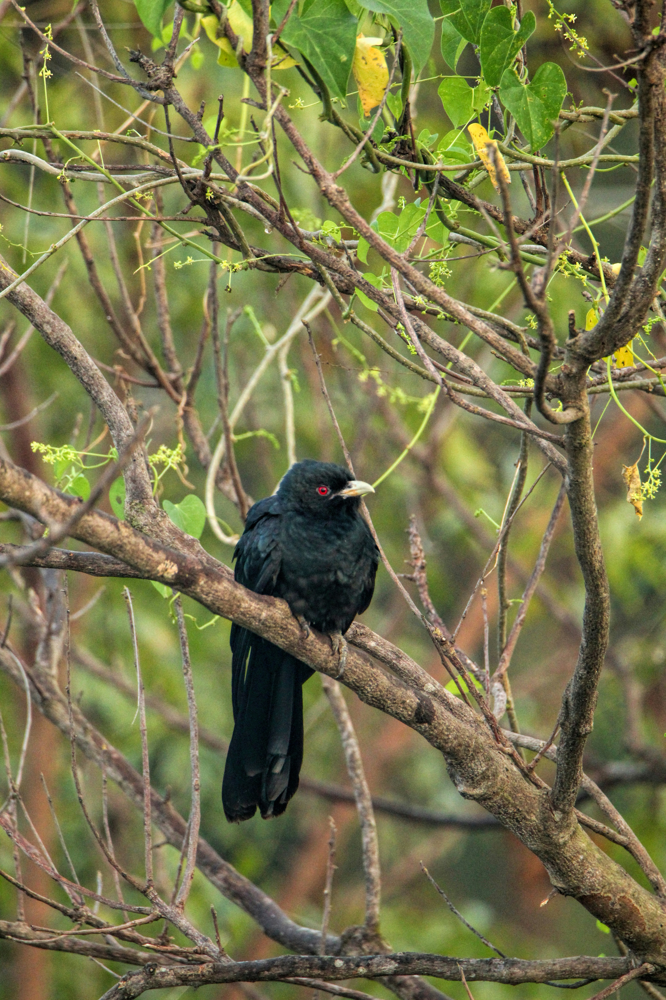

The Asian Koel is a familiar member of the cuckoo family and is particularly famous for its loud, far-carrying calls. The male is glossy black with a striking red eye, while the female is brown with extensive pale spotting and streaking. Asian Koels are strongly associated with trees, gardens, groves, and urban areas where fruiting trees are available. They feed largely on fruits and berries and may spend long periods hidden among dense foliage. Like many cuckoos, the Asian Koel has a fascinating breeding strategy in which it lays its eggs in the nests of other birds. Its unmistakable call is often one of the first signs that a koel is nearby.
Family: Cuculidae